Minha participação
Contribuí para o projeto realizando toda a programação do jogo, junto a mais cinco membros da equipe — incluindo dois outros programadores.
Plataformas
PC
Link de Download
https://alan-silva.itch.io/repair-the-kraken
Gameplay Features
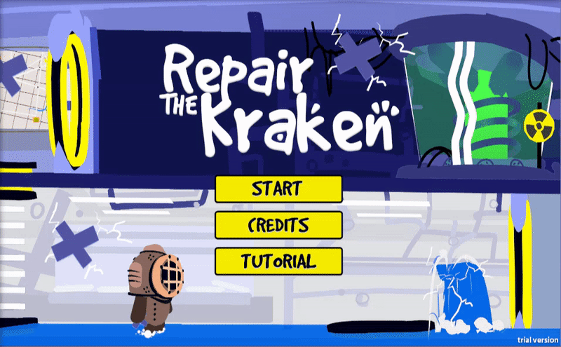


 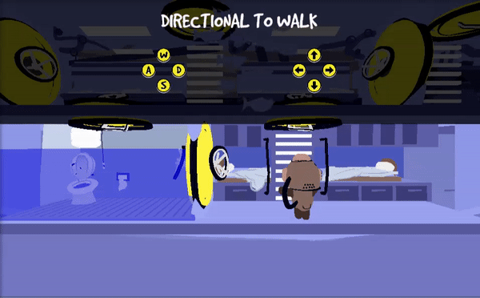
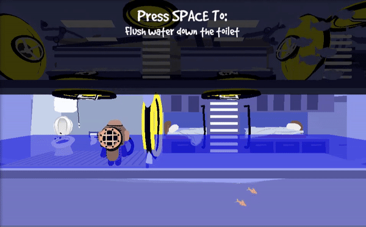
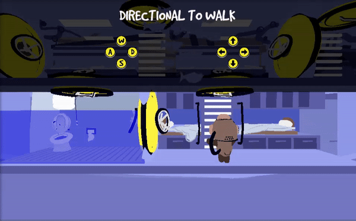
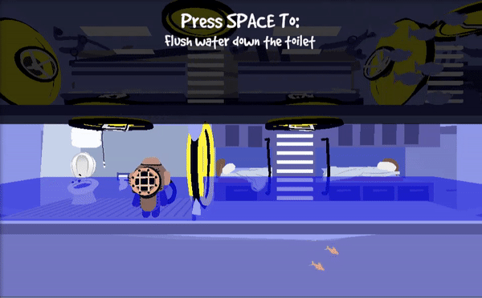
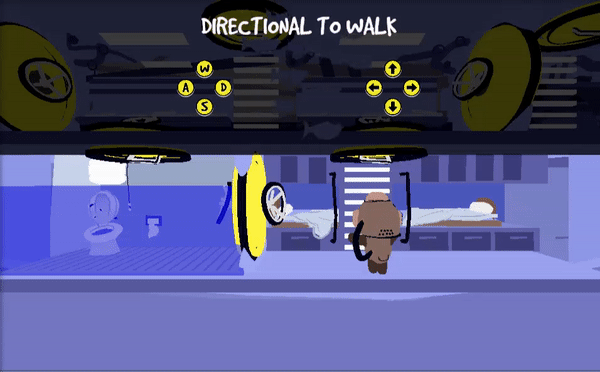
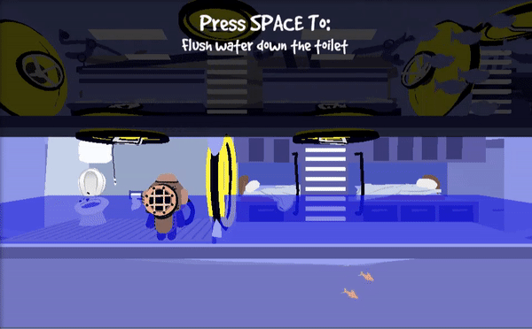
Game Screenshots
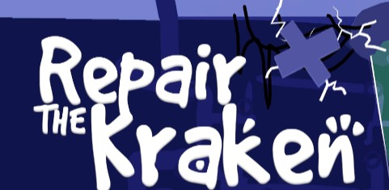
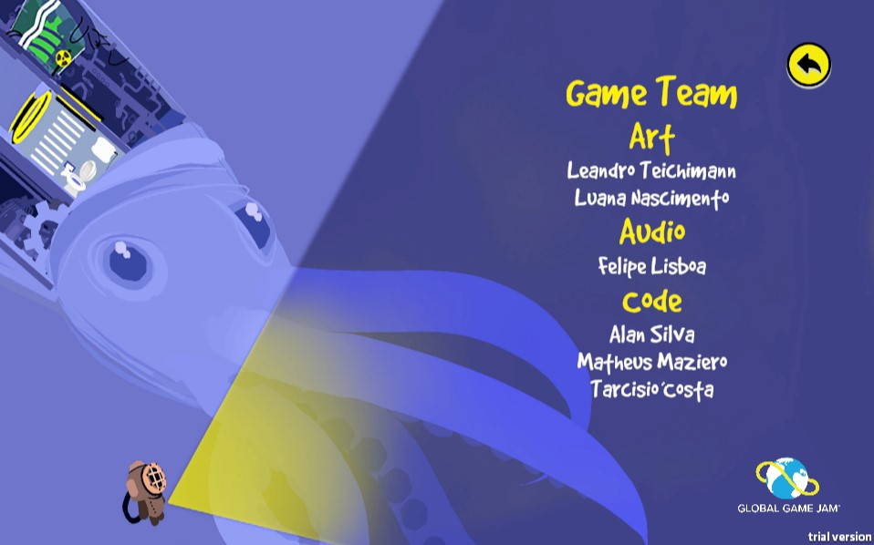
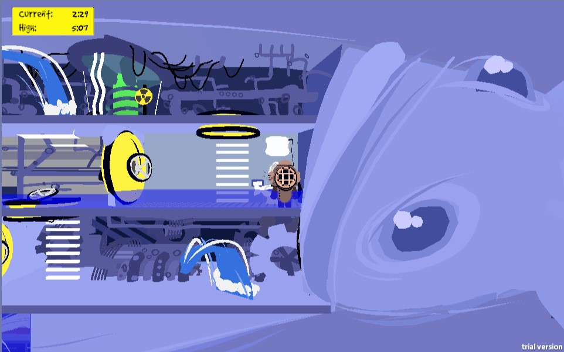
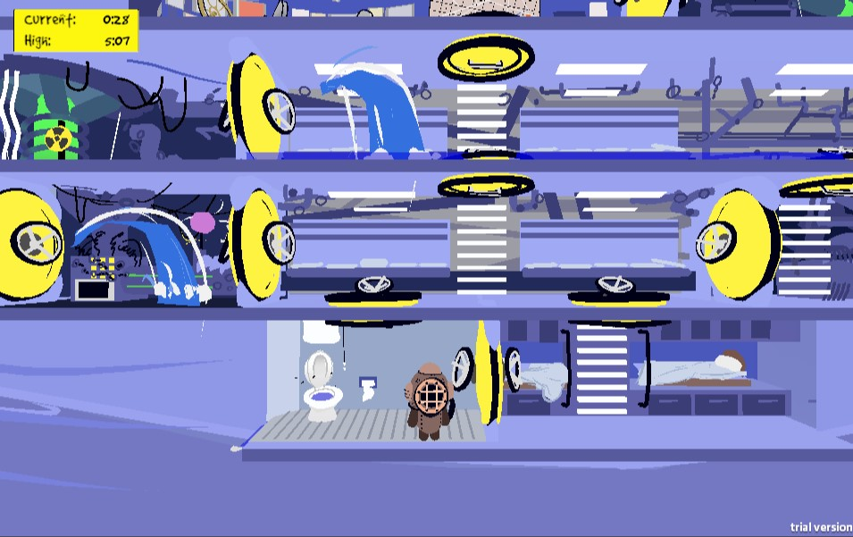
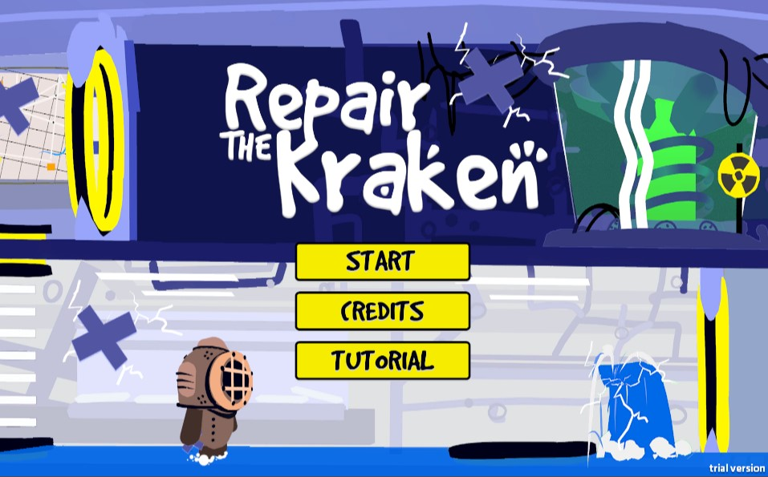
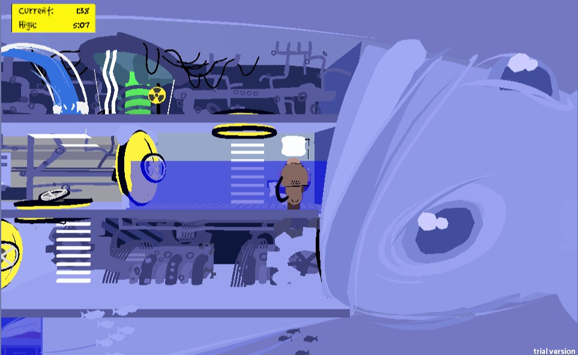
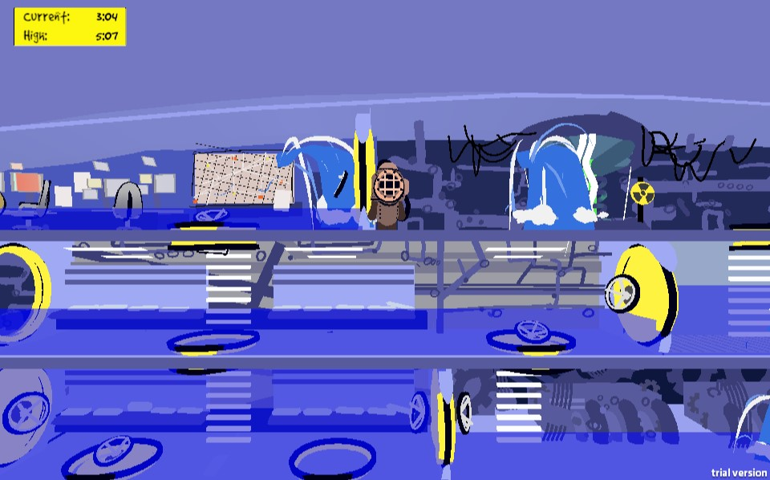
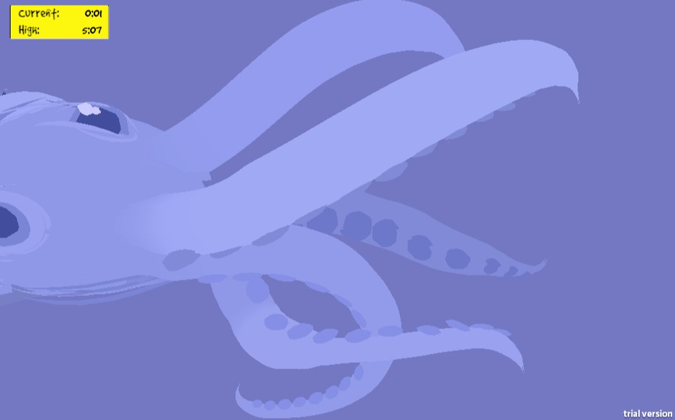